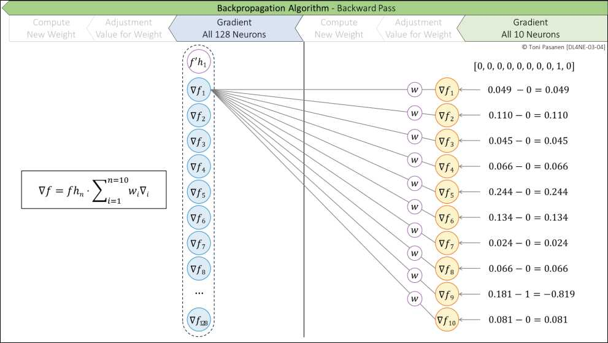
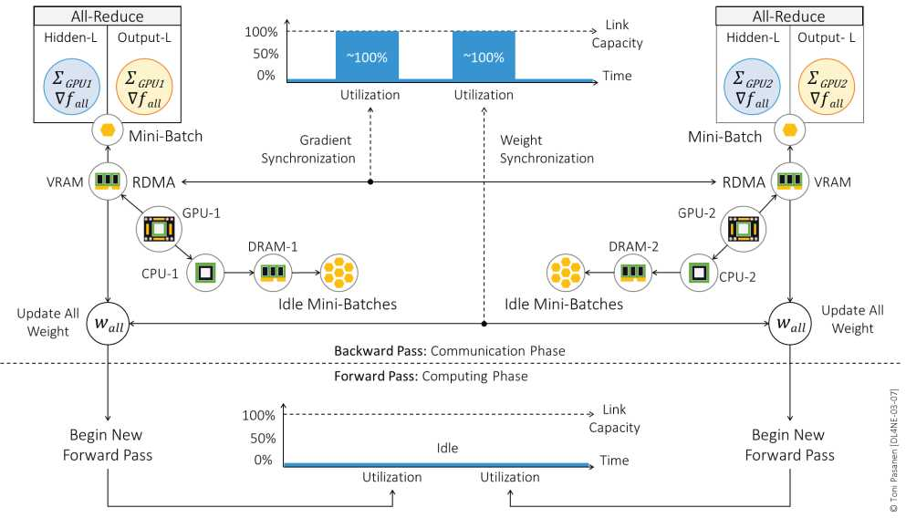

前向得概率 p，反向算 p 与真实 y 的差，再按“输入贡献”分摊到各权重：猜错的类对应权重要大调，猜对的微调。书 p84-86 给出梯度与 Δw 计算，逻辑与 Ch2 一致，只是输出从 1 个变 10 个。
MNIST 6万张可切成 micro-batch 分给多 GPU，各自算梯度再同步（AllReduce）。好处是快，代价是“每次同步都要走网络”。这正是 Ch8、Ch10-14 要解决的：同步流量 = elephant flow，网络稍差就拖慢整体。先记住结论，后面展开。
能默写 z 公式、Sigmoid/ReLU 区别、前向→误差→反向→更新闭环、Softmax+交叉熵、数据并行一句话？缺哪个回看哪天。进度条应到 7/28（25%）。


Week1 总复述：用 5 分钟给同事讲清“神经元→反向→多分类→数据并行”链条。